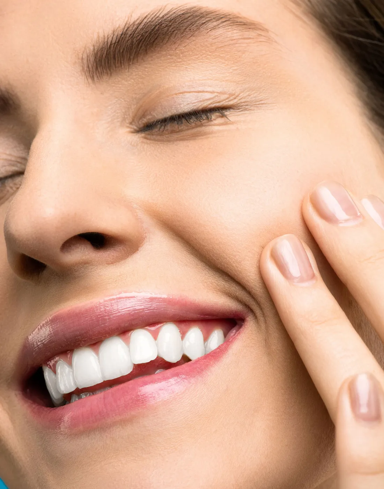
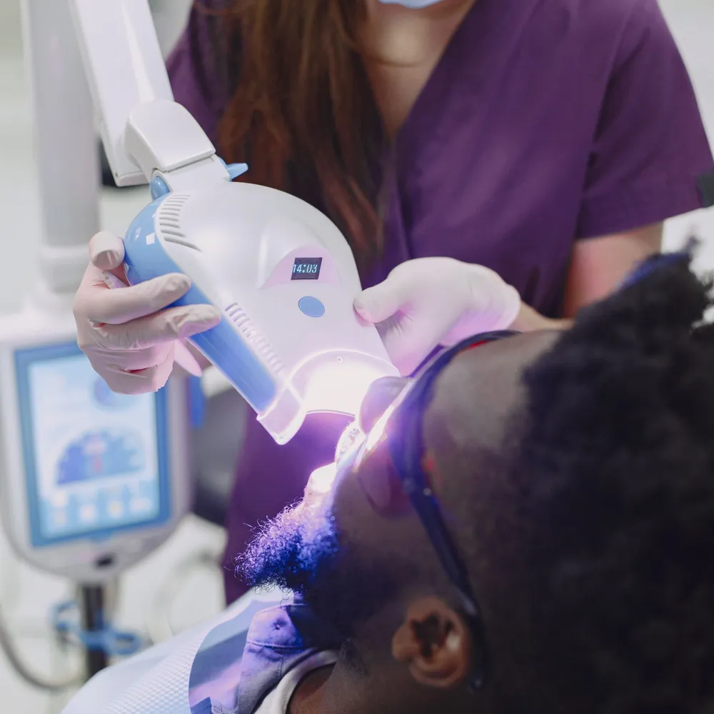

Clareamento
Muda o tom dos dentes sem desgastar. Em consultório ou com moldeira em casa.
Clareamento, lentes e alinhadores com plano por escrito antes de começar. Você sabe o caminho, o tempo e o valor de cada etapa.

Hora marcadaSeg a sex até 19h e sábado pela manhã, no Centro de Caxias.
Toque na cor mais parecida com a sua. É a mesma escala que usamos na avaliação.
2 sessões de clareamentoPara chegar ao B1, o tom mais claro da escala.
Agendar com esse tomDo A3.5 ao B1, que é o resultado mais comum depois de duas a três sessões de clareamento em consultório.
Ilustração. O resultado de cada pessoa é definido na avaliação.

Muda o tom dos dentes sem desgastar. Em consultório ou com moldeira em casa.
Lâminas finas de porcelana que corrigem cor, forma e tamanho.
Fecham espaços e consertam lascas em uma só consulta.
Remove tártaro e manchas. É a base de qualquer outro tratamento.
Aparelho transparente e removível, com planejamento digital.
Substituem o dente perdido com raiz de titânio e coroa sob medida.
ConversaVocê conta o que incomoda e o que quer mudar no sorriso.
ExameAvaliação completa, fotos e, se precisar, radiografia.
Plano por escritoVocê sai com o caminho, o tempo e o valor de cada etapa.
Cirurgiã-dentista, especialista em estética e reabilitação oral. Atende com hora marcada e explica cada etapa antes de fazer, sem pressa.
CRO-RS 00000Feito com avaliação e acompanhamento, não. Pode haver sensibilidade passageira, que a gente controla.
A primeira avaliação tem valor fixo e, se você começar o tratamento, ele é abatido do total.
Atendemos particular e emitimos recibo para reembolso. Parcelamos em até 12 vezes no cartão.
Muita gente tem. Explicamos cada passo antes de fazer e você pode pedir para parar quando quiser.